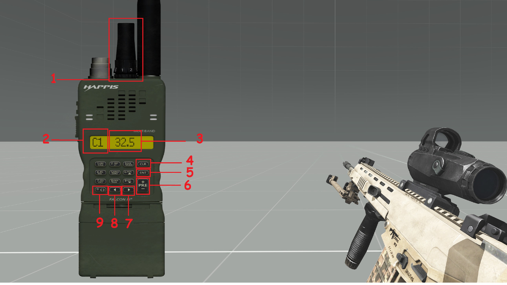

Direct speech
Your normal voice is positional and only heard nearby. Adjust speaking volume when you need to whisper, talk normally or project your voice.
Installation, radio setup, controls and communications tips for TFAR.
teamspeak folder, and run the included .ts3_plugin installer.Use the TFAR version supplied by the current Misfits modset. Mixing the old stable mod, beta mod, plugin versions or TeamSpeak installations is a common source of failure.
Your normal voice is positional and only heard nearby. Adjust speaking volume when you need to whisper, talk normally or project your voice.
Usually carried in the radio inventory slot. It is intended for your section, fireteam or other local tactical net.
Usually carried as a backpack or built into a vehicle. It is intended for command, support and communication between separated elements.
Terrain, distance, obstructions, radio type and antenna settings can affect reception. A radio is not a guarantee that every transmission will be clear.
Open a radio through ACE Self Interaction → Radios → your radio → Open, or use the configured radio-interface keybind. Radio faces differ, but the same concepts apply. Refer to the diagram below to get a run through of what a typical radio interface looks like:

A radio can monitor a second channel. Select the desired secondary channel, set it as additional, configure its stereo side, then return the display to your primary channel. Use the separate additional-channel transmit key when you need to speak on it.
| Action | Typical default | Use |
|---|---|---|
| Transmit short-range | Caps Lock | Your selected SR channel. |
| Transmit additional short-range | T | The additional channel on your SR radio. |
| Transmit long-range | Ctrl + Caps Lock | Your selected LR channel. |
| Transmit additional long-range | Ctrl + T | The additional channel on your LR radio. |
| Open short-range interface | Ctrl + P | Configure the current SR radio. |
| Open long-range interface | Alt + P | Configure the current LR radio. |
These are common defaults, not a substitute for checking Options → Controls → Configure Addons → TFAR. Your profile may use different bindings.
Many vehicles provide built-in long-range radios. Radio configuration can be tied to a specific turret or seat, so moving from pilot to co-pilot—or between crew positions—may expose a different radio that must be configured separately.
Vehicle intercom is internal positional communication, not a transmitted radio net. Use ACE interaction to join the appropriate crew, passenger or intercom channel. If you can hear the world but not your crew, check the intercom channel before changing radio frequencies.
If TFAR still fails, restart TeamSpeak and Arma after confirming the plugin installation.